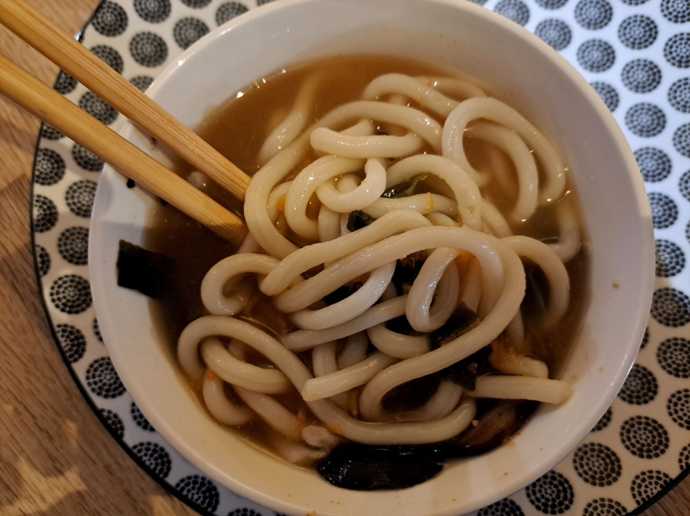

Miso Soup and Udon

Instructions
1
Roast the mushrooms
Lightly roast the sliced mushrooms in a pan until they begin to brown.
2
Prepare the bowl
Add the roasted mushrooms to a bowl along with: miso, dried wakame, rice vinegar, soy sauce, grated carrot, and garlic powder.
3
Cook the udon
Boil the udon noodles for about 3 minutes, then drain.
4
Boil the water
Bring approximately 30 cl of water to a boil.
5
Assemble the soup
Pour the boiled water into the prepared bowl and mix until the miso dissolves.
6
Add the udon
Add the cooked udon noodles to the bowl and serve hot.